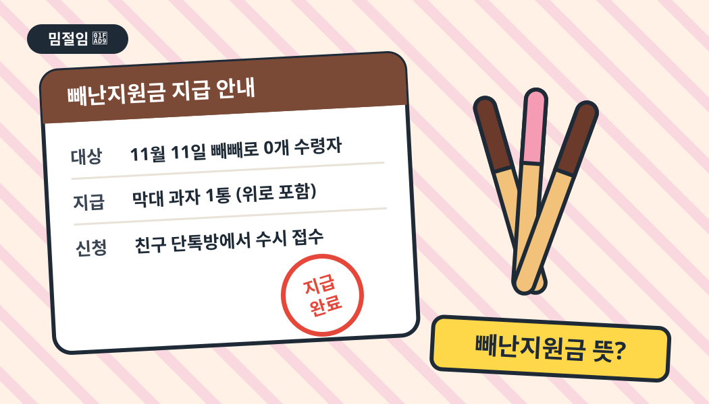

빼난지원금 뜻? 빼빼로 못 받은 사람 여기 모여라 🍫

*출처* 이슈피클 제작
3줄 요약
- 빼난지원금은 빼빼로데이에 빼빼로를 못 받은 사람에게 건네는 '위로 빼빼로'예요.
- 2026년 11월 6일 유병재 유튜브 아일릿 영상에서 초등학생 팬이 소개하며 퍼졌어요.
- 빼빼로 하나 건네며 "빼난지원금 지급합니다" 한마디면 끝이에요.
💡 무슨 뜻이에요?
빼난지원금은 '빼빼로'와 '재난지원금'을 섞은 말장난이에요. 11월 11일 빼빼로데이에 빼빼로를 하나도 받지 못한 사람에게, 서운하지 말라고 건네는 빼빼로를 가리켜요(파이낸셜뉴스).
포인트는 못 받은 서러움을 '지원금'이라는 거창한 말로 포장한 데 있어요. 주는 사람은 생색을 내고, 받는 사람은 웃으면서 받을 수 있죠.
📈 이렇게 떴어요
- 2026.11.6유병재 유튜브 채널에 '웃으면 안 되는 아일릿 팬미팅' 영상 공개 재경일보
- 영상 속요즘 신조어를 묻자 초등학생 팬이 '빼난지원금'을 소개. 뜻을 듣고 아일릿 멤버들도 비슷한 빼빼로를 받아 봤다며 공감 파이낸셜뉴스 · 재경일보
- 2026.11.11빼빼로데이 당일, 언론 보도와 함께 커뮤니티·SNS로 확산
초등학생 사이에서 쓰던 말이 빼빼로데이 타이밍을 만나 어른들까지 퍼진 셈이에요.
👀 반응은 어때요?
보도에 따르면 누리꾼들은 재난지원금이 이렇게 패러디될 줄 몰랐다는 반응과 함께, 지원금 신청은 어디서 하냐며 장난스럽게 조르는 댓글을 많이 남겼어요. 웃기면서도 살짝 슬픈, 이른바 '웃픈' 신조어라는 평이 많아요(파이낸셜뉴스).
🎬 영상으로 보기
지금 인기 영상 목록에는 관련 영상이 없어요.
유튜브에서 원본 영상 찾기 ↗*출처* YouTube 한국 인기 영상(공식 API)에서 자동으로 골라요
💬 이렇게 써요
- 친구 단톡방오늘 0개 받은 사람 손! 빼난지원금 지급합니다 🍫
- 회사 탕비실 쪽지빼난지원금 비치 완료. 필요한 분 자유롭게 가져가세요
- 받는 쪽저 빼난지원금 신청 대상자입니다… 서류는 눈물로 대신할게요
- 다음 날어제 못 받았으면 아직 늦지 않았어, 빼난지원금 추가 지급 중
📌 써먹는 팁
- 인스타 스토리: 빼빼로 사진에 '빼난지원금 지급 완료' 도장 스티커 하나.
- 단톡방: 빼빼로 기프티콘을 보낼 때 메시지 첫 줄로 쓰면 생색 두 배.
- 주의: 상대가 진짜 서운해할 땐 장난보다 위로가 먼저예요.
❓ 자주 묻는 질문
빼난지원금은 무슨 뜻이에요?
빼빼로데이에 빼빼로를 하나도 받지 못한 사람에게 위로 삼아 건네는 빼빼로예요. '빼빼로'와 '재난지원금'을 합친 말이에요.
빼난지원금은 어디서 나왔어요?
2026년 11월 6일 유병재 유튜브 채널의 '웃으면 안 되는 아일릿 팬미팅' 영상에서 한 초등학생 팬이 요즘 신조어로 소개하면서 알려졌어요.
빼난지원금은 언제 써요?
주로 11월 11일 빼빼로데이 당일이나 다음 날, 빼빼로를 못 받은 친구·동료에게 빼빼로를 건네며 써요. 받는 쪽이 '빼난지원금 신청합니다'처럼 장난스럽게 조르는 말로도 써요.
재난지원금을 놀리는 말이에요?
아니에요. 단어 모양만 빌린 말장난이고, 빼빼로를 못 받아 서운한 마음을 웃음으로 바꾸는 위로의 의미로 쓰여요.
절임장 · 뜨는 말만 골라 새콤하게 절여 와요 🥒